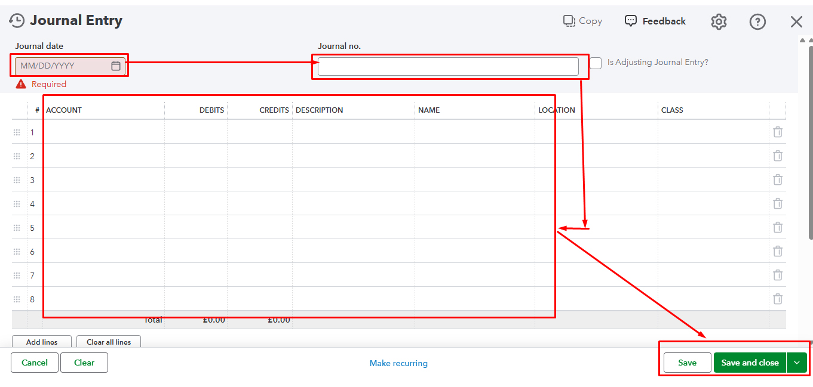
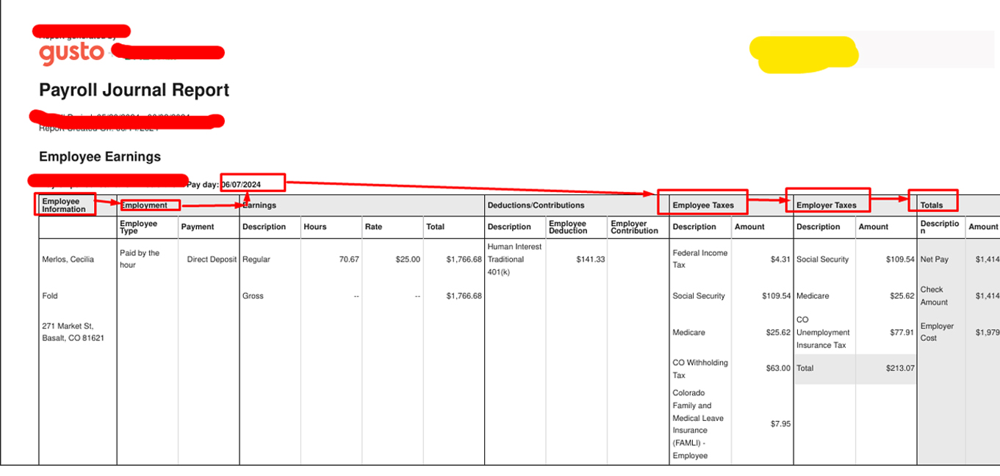
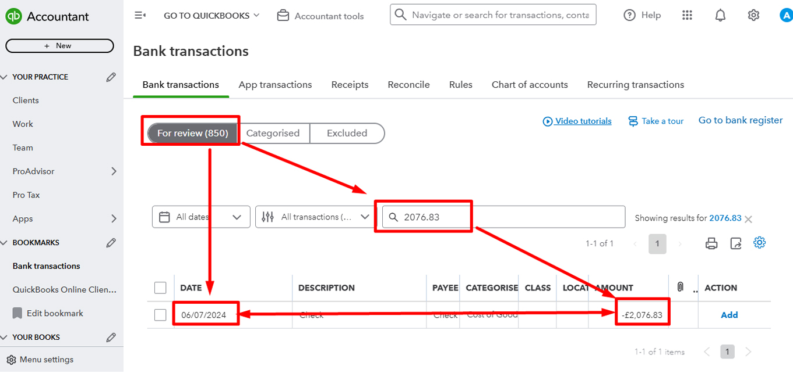
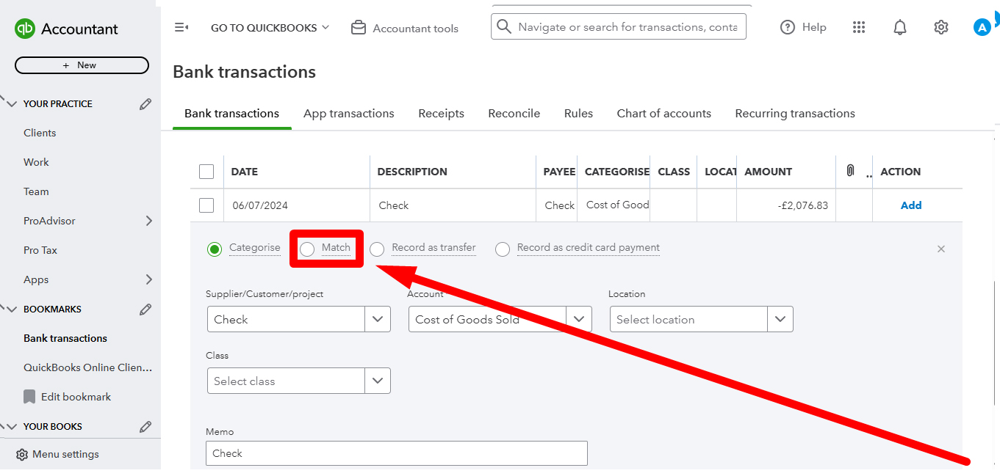
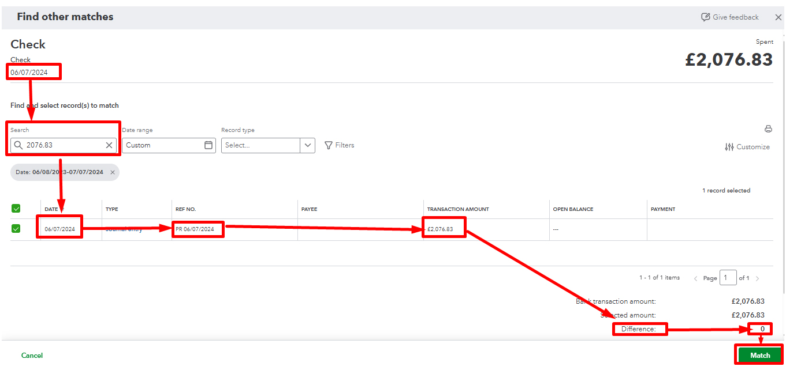
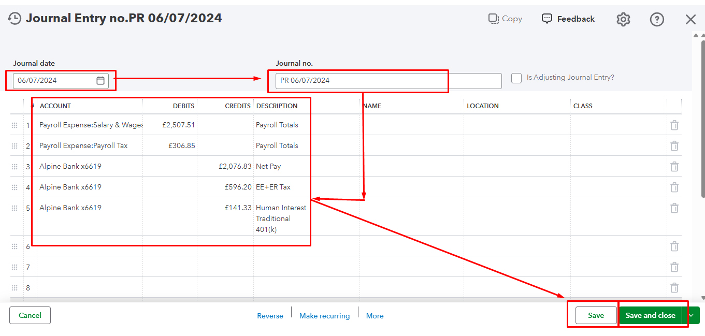
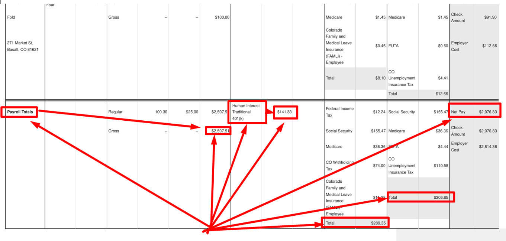

Back to QuickBooks Portfolio

QuickBooks Payroll Processing
Professional QuickBooks Online Payroll Processing, employee payroll, payroll journal entries, payroll reports, tax deductions, employer contributions and payroll reconciliation.
Project Overview
This project demonstrates the complete QuickBooks Online Payroll Processing workflow. It includes reviewing payroll reports, verifying employee earnings, taxes, deductions, employer contributions, creating payroll journal entries and matching payroll transactions with bank transactions to maintain accurate financial records.
Skills Used
- ✔ Payroll Processing
- ✔ Payroll Journal Entries
- ✔ Employee Earnings
- ✔ Payroll Tax Management
- ✔ Employer Contributions
- ✔ Bank Transaction Matching
- ✔ Payroll Reconciliation
- ✔ Financial Accuracy
Project Screenshots







×